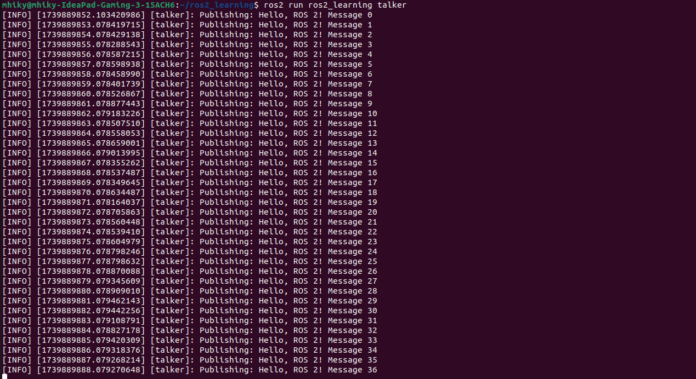
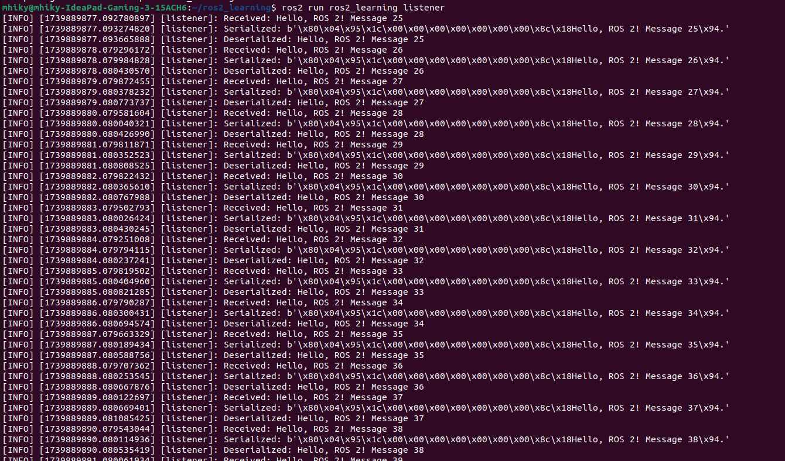
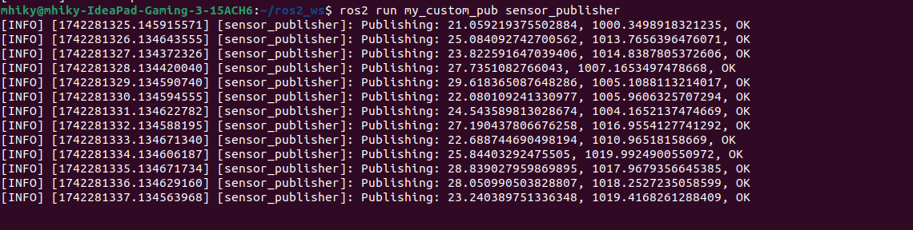

Concepts
Nodes
Each node in ROS should be responsible for a single, modular task. It is a fundamental building block of a robotic system. It represents a single process that performs computations, such as reading sensor data, controlling motors, or processing images. Each node can send and receive data from other nodes via topics, services, actions, or parameters. They communicate with each other to build a modular and scalable robotic system.
Each node has a unique name in the ROS 2 system. They can be assigned specific names to prevent conflicts. The namespaces allow grouping of related nodes for better organization. The nodes can also be remapped dynamically at runtime.
ROS 2 provides commands to list and monitor active nodes.
To get information about a specific node. You can use:
This displays details such as publishers, subscribers, services, and parameters associated with the node.
Messages
Nodes communicate with each other by publishing messages to topics. A message is a simple data structure, comprising typed fields. They define the format of data that can be sent and received over topics, services, or actions. Each message consists of one or more fields, which can be basic types such as integers, floats, and strings or complex types like arrays and nested messages.
ROS 2 nodes use messages to communicate via topics, services, and actions. In topics, it is often called the publisher-to-subscriber model. It is used for continuous data streaming. For example, the camera node publishes image messages, and a processing node subscribes to them. In services, this is called the request-response model. It is used for on-demand communication. For example, a node requests sensor calibration data from another node. For the actions, a goal-feedback-result model is commonly used for long-duration tasks with feedback. For example, a robot arm moves to a target position and provides feedback on its status.
For custom message types, users can create their own messages if predefined ones don’t meet their needs. Custom messages in ROS 2 are defined in .msg files, which specify data types like int32, float64, string.
| Message Type |
Description |
Example |
| std_msgs/String |
Sends text data |
‘Hello!’ |
| std_msgs/Int32 |
Sends an integer value |
42 |
| std_msgs/Float32 |
Send a floating point number |
3.14 |
| std_msgs/Bool |
Sends a boolean value |
True |
Topics
In ROS 2, topics are the primary mechanism for message-based communication between nodes. A topic is a named channel where nodes exchange data using the publisher-subscriber model. In general, nodes are not aware of who they are communicating with. Instead, nodes that are interested in data subscribe to the relevant topic; nodes that generate data publish to the relevant topic. With that, multiple publishers and subscribers can use the same topic.
Topics are intended for unidirectional, streaming communication. They do not need to establish direct connections; they just publish or subscribe to a topic name.
Topics work in ROS 2 by a publisher node being created and assigned to a topic. Then, a subscriber node subscribes to the same topic. The publisher sends messages of a specific message type on the topic. The subscriber receives messages whenever new data is published on that topic.
| Command |
Description |
ros2 topic list |
List all active topics ros2 topic list |
ros2 topic info /chatter |
Get information about a specific topic |
ros2 topic echo /chatter |
View real-time messages published on a topic |
ros2 topic type /chatter |
Check message type of a topic |
Programming
Creating Subscriber and Publisher Nodes
- Open your terminal.
- Create a ROS 2 workspace and navigate into it.
cd ~/ros2_ws/src
ros2 pkg create --build-type ament_python ros2_learning
cd ros2_learning
- Edit setup.py to include the nodes. Change the maintainer name and maintainer email for submission.
from setuptools import setup
package_name = 'ros2_learning'
setup(
name=package_name,
version='0.0.1',
packages=[package_name],
install_requires=['setuptools'],
zip_safe=True,
maintainer='your_name',
maintainer_email='your_email@example.com',
description='A complete ROS 2 package for learning publisher-subscriber and serialization',
license='Apache License 2.0',
tests_require=['pytest'],
entry_points={
'console_scripts': [
'talker = ros2_learning.talker:main',
'listener = ros2_learning.listener:main',
],
},
)
- Create the publisher node, talker.py.
import rclpy
from rclpy.node import Node
from std_msgs.msg import String
class Talker(Node):
def __init__(self):
super().__init__('talker')
self.publisher_ = self.create_publisher(String, 'chatter', 10)
self.timer = self.create_timer(1.0, self.publish_message)
self.count = 0
def publish_message(self):
msg = String()
msg.data = f'Hello, ROS 2! Message {self.count}'
self.publisher_.publish(msg)
self.get_logger().info(f'Publishing: {msg.data}')
self.count += 1
def main(args=None):
rclpy.init(args=args)
node = Talker()
rclpy.spin(node)
node.destroy_node()
rclpy.shutdown()
- Create the subscriber node, listener.py.
import rclpy
from rclpy.node import Node
from std_msgs.msg import String
import pickle # Import pickle for serialization
class Listener(Node):
def __init__(self):
super().__init__('listener')
self.subscription = self.create_subscription(String, 'chatter', self.callback, 10)
def callback(self, msg):
serialized = pickle.dumps(msg.data) # Convert message to bytes
deserialized = pickle.loads(serialized) # Decode message back to string
self.get_logger().info(f'Received: {msg.data}')
self.get_logger().info(f'Serialized: {serialized}') # Print raw serialized data
self.get_logger().info(f'Deserialized: {deserialized}') # Print decoded message
def main(args=None):
rclpy.init(args=args)
node = Listener()
rclpy.spin(node)
node.destroy_node()
rclpy.shutdown()
- Build the package and run it.
cd ~/ros2_ws
colcon build --packages-select ros2_learning
source install/setup.bash
- Run the talker node in a new terminal.
ros2 run ros2_learning talker
The result should like the image below.

- Run the listener node in a separate terminal.
ros2 run ros2_learning listener
The result should like the image below.

Creating a Custom Message
- Create a separate package under your workspace for the custom messages.
ros2 pkg create --build-type ament_cmake my_custom_msgs
You can see that we used ament_cmake as our build type here. This is because you cannot create custom interfaces like messages with a Python package.
- Create a msg directory where messages will be stored.
cd my_custom_msgs && mkdir msg && cd msg
- You can now create a custom message.
code SensorData.msg
Visual Studio Code should open if it is properly installed. Write this in your file.
float32 temperature
float32 pressure
string status
- We should now modify CMakeLists.txt.
The
rosidl_default_generators dependency is mandatory because it is responsible for creating the custom message.
cmake_minimum_required(VERSION 3.8)
project(my_custom_msgs)
if(CMAKE_COMPILER_IS_GNUCXX OR CMAKE_CXX_COMPILER_ID MATCHES "Clang")
add_compile_options(-Wall -Wextra -Wpedantic)
endif()
# Find dependencies
find_package(ament_cmake REQUIRED)
find_package(rosidl_default_generators REQUIRED)
find_package(std_msgs REQUIRED) # Ensure std_msgs is found
# Generate custom messages
rosidl_generate_interfaces(${PROJECT_NAME}
"msg/SensorData.msg"
DEPENDENCIES std_msgs
)
# Export dependencies for other packages to use
ament_export_dependencies(rosidl_default_runtime)
if(BUILD_TESTING)
find_package(ament_lint_auto REQUIRED)
set(ament_cmake_copyright_FOUND TRUE)
set(ament_cmake_cpplint_FOUND TRUE)
ament_lint_auto_find_test_dependencies()
endif()
ament_package()
- Modify the package.xml.
The dependencies are the same for this file.
<?xml version="1.0"?>
<?xml-model href="http://download.ros.org/schema/package_format3.xsd" schematypens="http://www.w3.org/2001/XMLSchema"?>
<package format="3">
<name>my_custom_msgs</name>
<version>0.0.0</version>
<description>Custom message definitions for ROS 2</description>
<maintainer email="mhiky@todo.todo">mhiky</maintainer>
<license>Apache-2.0</license>
<member_of_group>rosidl_interface_packages</member_of_group>
<buildtool_depend>ament_cmake</buildtool_depend>
<depend>rosidl_default_generators</depend>
<depend>builtin_interfaces</depend>
<depend>std_msgs</depend>
<test_depend>ament_lint_auto</test_depend>
<test_depend>ament_lint_common</test_depend>
<export>
<build_type>ament_cmake</build_type>
</export>
</package>
- Build the package and source the setup file.
cd ~/ros2_ws
colcon build --packages-select my_custom_msgs
source install/setup.bash
- We can now create a new publisher using our new custom message.
Create new ROS 2 package.
ros2 pkg create --build-type ament_python my_custom_pub
Inside my_custom_pub, modify setup.py to include the message package.
entry_points={
'console_scripts': [
'sensor_publisher = my_custom_pub.sensor_publisher:main',
],
},
- Create a Python publisher script inside ros2_ws/src/my_cutom_pub/my_custom_pub, name it as sensor_publisher.py
import rclpy
from rclpy.node import Node
from my_custom_msgs.msg import SensorData
import random
class SensorPublisher(Node):
def __init__(self):
super().__init__('sensor_publisher')
self.publisher_ = self.create_publisher(SensorData, 'sensor_topic', 10)
self.timer = self.create_timer(1.0, self.publish_sensor_data)
def publish_sensor_data(self):
msg = SensorData()
msg.temperature = random.uniform(20.0, 30.0)
msg.pressure = random.uniform(1000, 1020)
msg.status = "OK"
self.publisher_.publish(msg)
self.get_logger().info(f'Publishing: {msg.temperature}, {msg.pressure}, {msg.status}')
def main(args=None):
rclpy.init(args=args)
node = SensorPublisher()
rclpy.spin(node)
node.destroy_node()
rclpy.shutdown()
if __name__ == '__main__':
main()
Make it an executable file to successfully run it.
chmod +x ~/ros2_ws/src/my_custom_pub/my_custom_pub/sensor_publisher.py
-
Build the new package you created.
cd ~/ros2_ws
colcon build --packages-select my_custom_pub
source install/setup.bash
- Run the publisher in a new terminal.
source install/setup.bash
ros2 run my_custom_pub sensor_publisher
The terminal should look like the image below.
